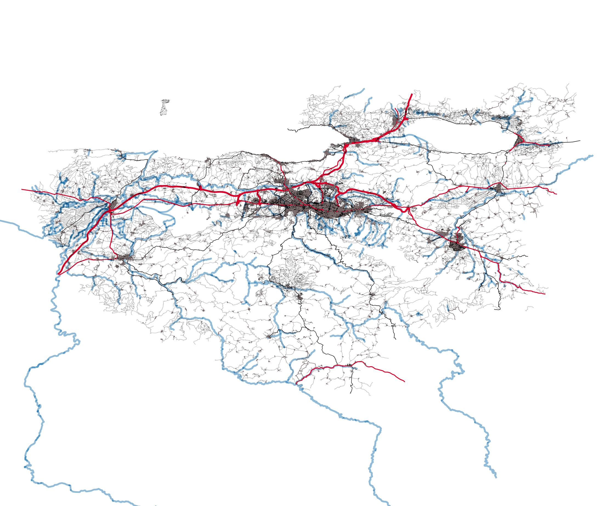
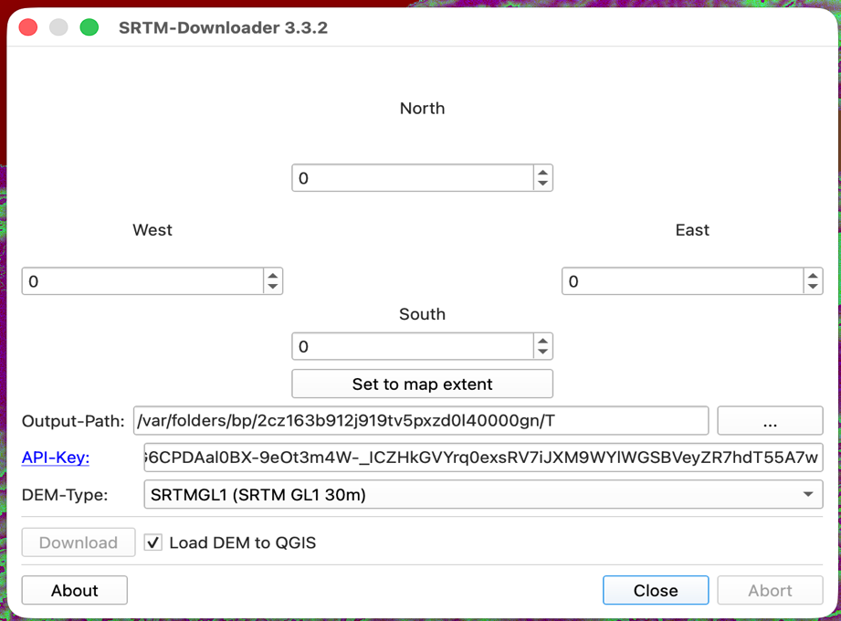
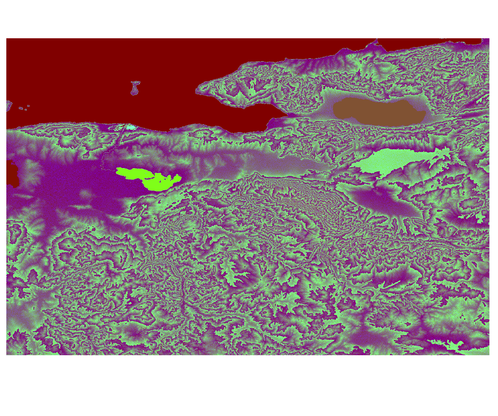
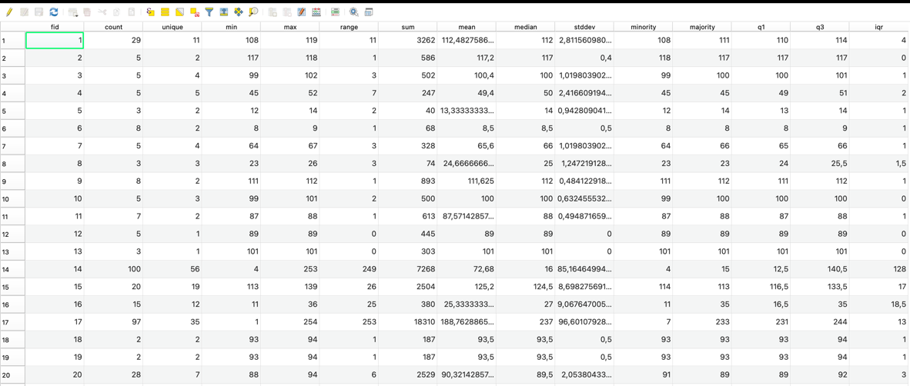
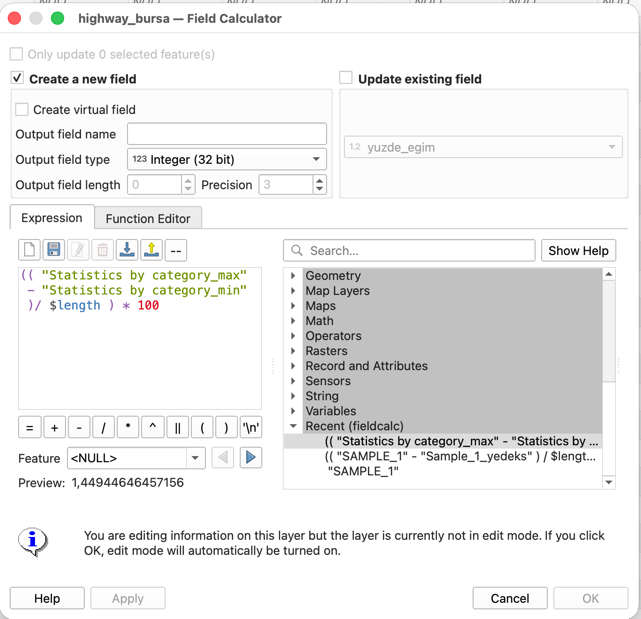
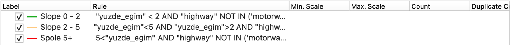
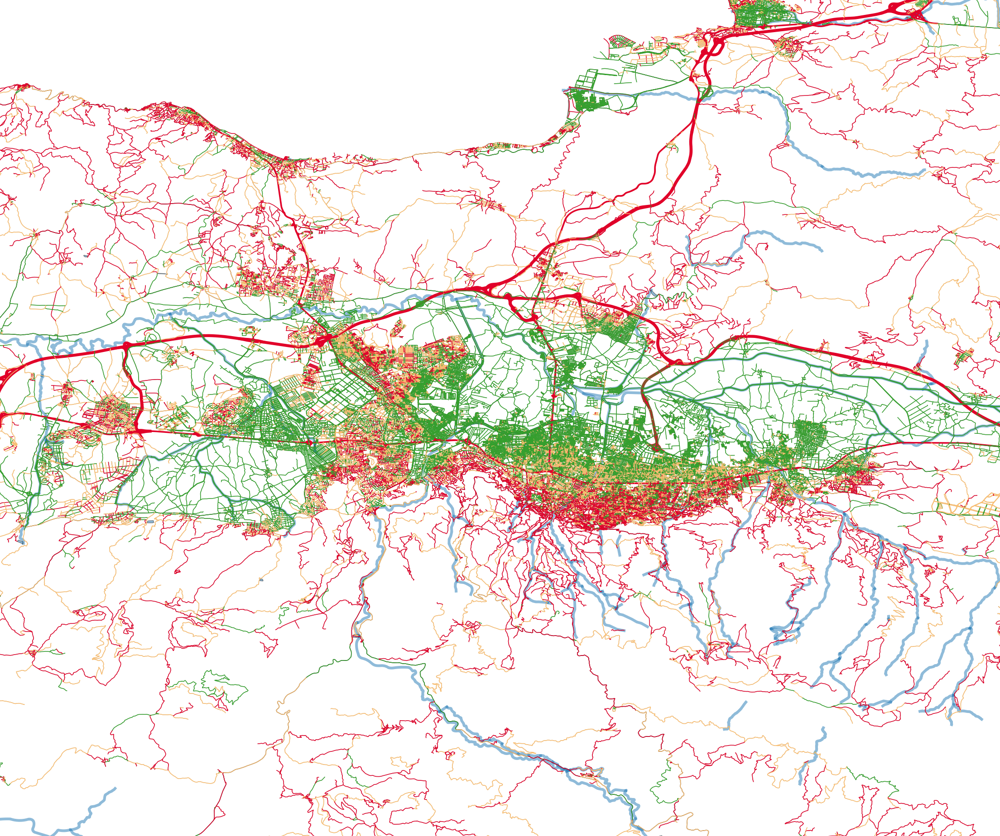

Bicycle Suitability Analysis of Bursa’s Road Network
Evaluating Topographic Feasibility by Integrating OSM Vector Data and SRTM DEM
Hello everyone. My name is Recep Eren Durgut, and today I will present my GIS analysis on the spatial and topographic suitability of Bursa’s road network for bicycle transportation. This work was completed for the Intelligent Transportation Systems course at BME. In this project, we integrated OpenStreetMap vector data with digital elevation models to evaluate how slope gradients affect bike-ability across the city, aiming to support sustainable urban planning.
Executive Summary
🎯
Project Goal
Evaluate the topographic suitability of Bursa's urban road network for bicycle transit to support micro-mobility networks.
⚡
Methodology
Integrate 2D OpenStreetMap (OSM) vector data with 3D Shuttle Radar Topography Mission (SRTM) DEM to extract longitudinal gradients.
📈
Key Outcomes
Identify critical cycling-friendly zones (e.g., Nilüfer) and isolate steep segments (e.g., Uludağ foothills) needing infrastructure intervention.
"By calculating precise slopes for every single road segment in Bursa, we establish a data-driven model for municipal bicycle network expansions."
To give you an executive summary: our primary objective was to assess how Bursa's hilly terrain impacts cycling feasibility. By combining planimetric road networks with elevation models, we computed the precise gradient of every road segment. This dataset enables planners to make informed, data-driven decisions—such as choosing locations for bike-sharing stations, identifying steep slopes where electric-assist bikes are needed, and filtering out routes that are legally or physically inaccessible to cyclists.
Data Acquisition & Processing
Vector Data
OSM Highway Networks
Extracted Bursa's administrative road boundary using the QuickOSM plugin. Preserved crucial attributes like unique Feature IDs (fid), names, and highway classes.
Raster Data
Digital Elevation Model (DEM)
Acquired vertical topography grid using the SRTM Downloader plugin in QGIS, supplying elevation reference points (Z-coordinates).
🔍 Click to zoom

Fig 1: QuickOSM Road Network
🔍

Fig 2: SRTM Download
🔍

Fig 3: Topography DEM
Our data acquisition relied on two primary sources. First, we extracted the road network vector data using the QGIS QuickOSM plugin, filtering for highways within Bursa. Key attributes like Feature ID, street names, and highway classes were preserved. Second, we obtained vertical elevation data using the SRTM Downloader extension. This gave us a high-resolution Digital Elevation Model raster grid, which serves as our elevation baseline to compute slopes.
Spatial Analysis Workflow
01
Geometric Discretization
Used Extract Vertices to split road lines into coordinate nodes. Essential because elevation shifts dynamically across a single road segment.
02
Point Elevation Sampling
Assigned absolute elevation (Z-values) to each node using the Sample Raster Values tool against our DEM raster.
03
Statistical Aggregation
Aggregated points back to lines using Statistics by Categories, grouping by fid to extract the minimum (min_z) and maximum (max_z) height for each road.
🔍 Click to zoom

Figure 4: Statistics Output File UI (Min & Max Z per segment)
The technical methodology follows a three-phase workflow to solve the challenge of varying elevation. In Phase One, we discretized the road lines into individual vertices because a single road segment can go up and down. In Phase Two, we sampled the raster elevation values at each of these points to attach Z-values. In Phase Three, we aggregated these points back to their parent segments using the 'Statistics by Categories' tool, calculating the minimum and maximum elevation for each road segment.
Engineering Calculations & Expressions
Planimetric Distance: Derived dynamically using the QGIS geometry function $length.
Logic: Calculates absolute vertical difference divided by horizontal run.
Relational Join: Statistics output table was joined back to the main spatial layer using the fid attribute to enable visualization.
🔍 Click to zoom

Figure 5: Field Calculator Slope Expression in QGIS
With the min and max elevations joined back to our road network by Feature ID, we calculated the longitudinal slope using QGIS Field Calculator. The formula represents the vertical rise over the planimetric horizontal run, multiplied by 100 to get a percentage. QGIS's native length function provided the planimetric distance. This allowed us to write a direct attribute equation to classify the entire city’s roads.
Challenges Encountered & Solutions
Detail: Native geometric query expressions like max_z($geometry) failed due to internal QGIS parser errors.
Workaround: Engineered the 3-step pipeline (Extract Vertices → Sample Raster → Statistics by Categories) to manually sample values.
Detail: Dense vertex points caused processing tools to stall at 50% completion.
Workaround: Resampled lines into points along geometry at a fixed 100m interval, reducing data size by 80% while retaining statistical integrity.
Detail: Slopes on highways are mathematically flat (green) but physically and legally closed to cyclists, distorting suitability mapping.
Workaround: Built rule-based styling filters to exclude motorway, trunk, and primary classes from the cycling map.
🔍 Click to zoom

Figure 6: Rule-Based Styling Setup in QGIS UI
During execution, we faced three main challenges. First, parser limitations prevented us from doing direct geometric queries. We resolved this through our three-step vertex-extraction workaround. Second, the massive dataset caused processing lags. We optimized this by generating points along geometries at a fixed 100-meter interval, reducing the calculations by 80%. Third, high-speed motorways skew cycling maps, so we applied rule-based filters to exclude trunks and motorways from the cycle network.
Bicycle Suitability Classification
| Level |
Slope Range |
User Experience |
Color |
| Level A (Ideal) |
0% - 2% |
Effortless; suitable for all ages & commutes. |
Green |
| Level B (Moderate) |
2% - 5% |
Requires average fitness; minor exertion. |
Yellow |
| Level C (Challenging) |
> 5% |
Steep; suitable for sports or electric bikes. |
Red |
Geographic Findings:
- Nilüfer District (West): Flat landscape dominated by Level A roads. Primary candidate area for a bike-sharing network.
- Uludağ Foothills (South): Gradients consistently exceed 8%. Demands specialized climbing lanes and e-bike infrastructure.
🔍 Click to zoom

Figure 7: City Center Bicycle Suitability Classification Map
To evaluate suitability, we classified roads into three levels based on slope. Level A, from 0 to 2 percent slope, is colored green and represents effortless cycling. Level B is moderate, yellow, from 2 to 5 percent. Level C, red, is challenging with slopes over 5 percent. Geographically, our map shows that the western Nilüfer district is flat and highly suitable for standard bike-sharing. However, the southern areas near the Uludağ foothills average over 8 percent slopes, indicating that standard bikes won’t work there, and e-bikes or dedicated climbing routes are required.
City-Wide Bicycle network Evaluation
Key Takeaways
1. Infrastructure Planning
Filter out high-speed arterial roads. Although they appear flat, they act as impassable barriers for cyclists.
2. Bike-Sharing Potential
Western Bursa (Nilüfer) has the highest viability for standard, affordable public bike systems.
3. E-Bike Integration
Southern Bursa zones require docked e-bikes to encourage cross-city commuting across Uludağ slopes.
↔️ Drag slider to compare: Left (Without Highways) vs Right (With Highways)
Fig 8: Excluding Highways
Fig 9: Including Highways (thick red)
Finally, looking at the city-wide scale, we compared the bicycle network with and without high-speed arterials. This comparison is vital because while highways appear flat and green on slope maps, they act as physical barriers that slice through local neighborhoods. In conclusion, our analysis recommends a standard bike-share system for Nilüfer, electric-assist infrastructure for the steep southern corridors, and the creation of safe bypass paths around major arterial junctions to create a truly connected, sustainable bicycle network. Thank you.